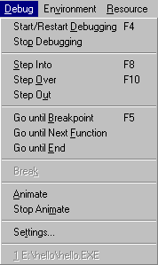
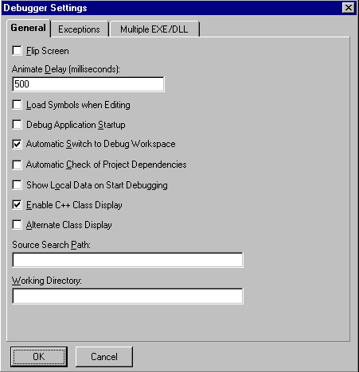
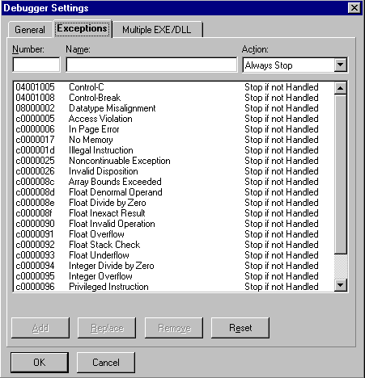
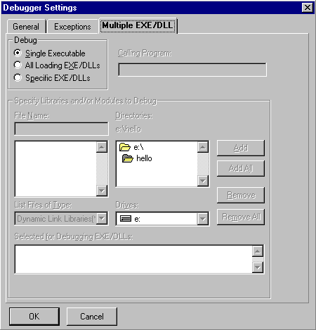
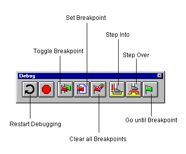
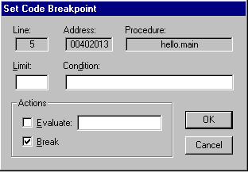
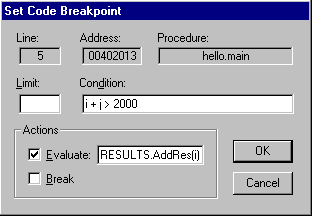
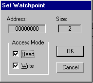

Home
| Search
| CTG
| RTL
| IDDE
| STL
Home
| Search
| CTG
| RTL
| IDDE
| STL
Last update Fri Apr 28 16:30:17 2006
|
Reference 1. Introducing Digital Mars C++ 2. Introducing the IDDE Part 2: Creating an Application with Digital Mars C++ 3. Starting a Project and Defining Workspaces 4. Generating an Application Framework 5. Defining Classes and Their Hierarchies 6. Editing Program Code 7. Adding Look and Feel with Resources 8. Testing an Application Part 3: Learning Digital Mars C++ by Example 9. Introduction to the Tutorial 10. Lesson 1: Create the DOS Application 11. Lesson 2: Generate an Application Framework 12. Lesson 3: Customize the Interface 13. Lesson 4: Add Messages with ClassExpress 14. Lesson 5: Add a Dialog Box with ClassExpress Part 4: More about Creating Programs 15. More about Projects and Workspaces 16. More about Project Build Settings 17. More about AppExpress 18. More about ClassExpress 19. Class Editor Reference 20. Hierarchy Editor Reference 21. Text Editor Reference 22. Using Version Control Part 5: More about Testing Programs 23. Controlling and Configuring the Debugger 24. Commands Available in Debugging Mode Part 6: About Managing Resources 25. ResourceStudio Resource Editor 26. Dialog Editor 27. Menu, Accelerator and String Table Editors 28. Bitmap, Cursor, Icon, and Font Editors 29. Version Information and Custom Resource Editors Part 7: Appendixes A. Expression Evaluation B. IDDE Settings and Command-Line Options C. Using NetBuild |
23. Controlling and Configuring the DebuggerThis chapter describes the commands on the IDDE's Debug menu that you use to run the debugger. This chapter also explains how to use breakpoints and watchpoints effectively.Chapter 8, "Testing an Application," presents an overview of the Digital Mars C++ debuggers and explains how to perform typical debugging tasks. Chapter 24, "Commands Available in Debugging Mode," describes the commands and the functionality of each of the debug windows that you can open from the Views palette. Commands on the Debug MenuDebugging commands are located in the Debug menu on the IDDE's main menu bar. Figure 23-1 shows the Debug menu commands. [Figure 23-1 Debug menu commands This section describes the commands in the Debug menu in the order shown in Figure 23-1. Note: Frequently used debugging commands are available from the Debug toolbox. See "Debug Toolbox Icons" in this chapter to learn how to use the Debug toolbox. Start/Restart DebuggingStarts a debugging session. During a debugging session, any open Source window changes from editing mode to debugging mode. In debugging mode you can set breakpoints, jump to a specific line, or view assembly instructions generated for a line of code. You cannot, however, edit the source code. You must exit the debugging session (return to the editing session) to modify the source code.Note: If you need to specify command-line parameters in your application, you can do so in the Run Arguments dialog box, available by choosing the Arguments command from the IDDE's Project menu. If debugging is in progress, choosing Start/Restart Debugging restarts the application. Note: If you want to run the program without debugging it, choose the Execute Program from the Project menu. Stop DebuggingExits the current debugging session and switches the IDDE into editing mode.Step IntoExecutes the program until it reaches the next source-level statement. This command lets you step through the program's code at the source level, statement by statement.If Step Into is used on a procedure or function call, the debugger steps into the first statement of the function only if tracing is enabled for the module containing that function. For more information, see "The Project Window," in Chapter 24, "Commands Available in Debugging Mode." If the Assembly window is the active window, this command executes to the next assembly (as opposed to source level) instruction. If the assembly window is open but is not the active window when you use this command, it updates to show the next instruction to be executed. Step OverExecutes the program to the next statement, or until a breakpoint or watchpoint is triggered or an exception is raised. If the current statement is a call to a procedure or function, the program executes to the next statement following the call.If the Assembly window is the active window, this command executes the program to the next assembly instruction without tracing into function calls. If the current instruction is a call to a function, the program executes to the assembly instruction following the call. Return from CallExecutes the program up to the current function's return address, or until a breakpoint or watchpoint is triggered or an exception is raised. This command is useful when executing the rest of the current function or procedure after having stepped into it, then stopping execution at the point immediately after the call was made.Go until BreakpointExecutes the program until a previously set breakpoint or watchpoint is triggered.Go until Next FunctionExecutes the program until the entry point of the next function call is reached, or until a breakpoint or watchpoint is triggered or an exception is raised. This command is useful when executing from any point in a function to the next function call.Go until EndExecutes the program to the end, ignoring any breakpoints and watchpoints that are set. If a Windows protection fault or other exception occurs, the program breaks at the point of the violation.Break(32-bit IDDE only) Stops the process currently being debugged, and shows the location of the current execution point. Choosing Break is equivalent to typing CTRL+ALT+SYSREQ in a debugging session with the 16-bit IDDE.AnimateExecutes the program until the next source-level statement is reached, waits for a short delay (the animate delay), and again executes the program until the next source-level statement is reached. This command is equivalent to repeatedly executing the Step Into command and waiting for a short delay. To stop the animation mode, choose Stop Animate.To set the animation delay time, choose the Animate Delay command from the Settings submenu of the Debug menu (see the section "Animate delay," later in this chapter). Stop AnimateStops the animation mode.SettingsBrings up the Debugger Settings tabbed dialog box (Figure 23-2). The tabs at the top allow you to switch between the General page, the Exceptions page, and the Multiple EXE/ DLL page.GeneralOptions on this page of the Debugger Settings dialog box control the general debugger settings, such as the animation delay. [Figure 23-2 General page of the Debugger Settings dialog box
Flip screenSpecifies whether the IDDE flips control of the screen between the debugger and the text-mode application window each time the debugger executes some part of the application code.When Flip Screen is turned on, the application gets control of the screen each time it runs. When Flip Screen is turned off, the debugger does not activate the application to bring it to the foreground each time the debugger gives control to the application. Animate delayOpens the Animate Delay dialog box. This dialog box allows you to specify the amount of time the debugger pauses between steps while in animation mode. In animation mode, the debugger executes the program step by step, pausing between steps by the amount of time you have specified. (See the section "Animate" earlier in this chapter for information on the Animate command.)The Animate Delay dialog box lets you specify the delay in milliseconds. For example, to pause for one second between steps, specify 1000; the default is one-half second (500 milliseconds) delay. Load symbols when editingWhen this option is checked, the IDDE loads debug symbols from the compiled executable or the DLL when the IDDE is in editing mode. This gives you access to the data definitions in the Data Window, as well as to line number information, while editing your source code. For this option to work properly, you must build your project with debug symbols enabled. Note that in editing mode some of your operations in editing mode might take longer when this option is on because IDDE has to load the debug symbols from your compiled project.Warning: No changes that you have made to the source files since the last time you compiled your project are reflected in the debug symbols shown while you are editing. To update the debug symbols, you must rebuild your project. Debug application startupControls whether debugging starts at the beginning of a program or at the WinMain() or main() entry point.If you check this option, the debugger automatically sets a fixed breakpoint at the main entry point and lets you trace through the application's startup code. If not, the debugger starts tracing from WinMain() or main() onward. Automatic switch to debug workspaceWhen you check this option, the debugger automatically debugs the current project in the IDDE debugging workspace.Automatic check of project dependenciesWhen you check this option, the debugger automatically checks the project dependencies in the current project.Show local data on start debuggingWhen you check this option, the debugger automatically displays local data at the start of a debugging session. By default, the Data window shows no data.Enable C++ class displaySpecifies whether the debugger displays C++ types in the Data/Object window using the form class::object. When you do not check this option, the debugger does not display C++ class names in the Data/Object, Call, or Function windows.Alternate class displayReverses the order in which C++ information is displayed in the Data/Object window to the form object::class. This command is disabled unless you check the Enable C++ Class Display option.Source search pathSpecifies the search path for source files when debugging.Working directorySpecifies the working directory for a debugging session.Exceptions (32-bit IDDE only)Options on this page let you control how the debugger responds to the operating system when an exception occurs. This capability helps you diagnose the cause of unforeseen, and possibly serious, errors.Exceptions presented on this page are NT exceptions, which are part of the Structured Exception Handling mechanism of Win32. NT exceptions comprise both hardware exceptions (such as access violations, division by zero, or stack overflow) and software exceptions (explicitly initiated either by Win32 APIs— HeapAlloc, for instance— or by your own code). However, C++ exceptions are also accommodated on the Exceptions page. When you throw a C++ exception in a Win32 program, an NT exception is raised. The exception code of the NT exception is the same value, unique to Digital Mars C++, regardless of which C++ exception was thrown. Note: For more information on Structured Exception Handling, see Microsoft Win32 Programmer's Reference, Volume 2. You can specify whether or not the debugger should stop on a particular exception, or should stop only if you have not provided a handler for it. (Uses of these options are discussed below.) The Exceptions page is shown in Figure 23-3.  [Figure 23-3 Exceptions page of the Debugger Settings dialog box
Multiple EXE/DLL debuggingOptions on this page (Figure 23-4) allow you to specify how to debug a project with multiple executables or dynamic link libraries. [Figure 23-4 Multiple EXE/DLL page of the Debugger Settings
Debug Toolbox IconsThe Debug toolbox contains icons that correspond to the commands on the IDDE's Debug menu. Figure 23-5 shows the command that each icon invokes. For information on how to use these commands, see the previous section.
 Working with BreakpointsThis section explains how to set and use breakpoints with the Digital Mars C++ debuggers. The debuggers support three types of breakpoints:
Unconditional breakpointsAn unconditional breakpoint causes the debugger to stop execution of the program when the breakpoint is encountered.You set unconditional breakpoints using the Set Breakpoint or the Set/Clear Breakpoint command (F9) in the Source, Assembly, Function, Data/Object, or Breakpoint windows (as well as in the Spy window when debugging a Windows application). After setting an unconditional breakpoint, choose the Go until Breakpoint command from the IDDE's Debug menu to execute your program until it reaches the breakpoint. When the breakpoint is reached, the program halts and returns control to the debugger. Note: While in debugging mode, you can also set an unconditional breakpoint by double-clicking in the left margin of the Source window at the line where you want execution to stop. Conditional and delayed breakpointsConditional breakpoints let the debugger:
Note: When you choose Set Conditional Breakpoint in the Breakpoint window, the Expression dialog box is displayed first. Enter the address or procedure name (for example) where you want to set the breakpoint. The Set Code Breakpoint dialog box is then displayed to allow you to specify the kind of breakpoint to set.  [Figure 23-6 Set Code Breakpoint dialog box The debugger automatically sets the Line, Address, and Procedure fields, based on the location of the breakpoint.
Examples of conditional breakpointsThe following are examples of conditional breakpoints:Example 1To execute your program to a point at which a certain condition is met— such as stopping the execution at this breakpoint only if the value of i + j is greater than 2000 -- execute a Set Conditional Breakpoint command. Specify the expression i + j > 2000 in the Condition field.The debugger executes your program and evaluates the condition every time it executes the line on which the breakpoint is set. If the condition specified does not evaluate to TRUE, the debugger continues to execute your program. As soon as the value of i + j exceeds 2000 when this line is executed, the debugger stops executing the program and regains control. Example 2You omitted a statement from a line in which you should have called the function AddRes from the module Results with the parameter i as defined in the current function. You can use a conditional breakpoint to direct the debugger to evaluate this call whenever it encounters the breakpoint, and to do this before this line is executed and without stopping execution.Set a conditional breakpoint on the line and specify the Evaluate option, as shown in Figure 23-7.  [Figure 23-7 Setting a breakpoint in your code Every time the debugger reaches this line and i + j > 2000 is TRUE, it calls RESULTS.AddRes(i). However, it does not stop executing your program because you did not check the Break check box. For information on breakpoint and watchpoint commands in windows, see "The Command Window," in Chapter 24, "Commands Available in Debugging Mode." Working with WatchpointsWatchpoints are vital to debugging. A watchpoint stops program execution while the debugger either writes to or reads from a location in memory. A variable or location in memory is often improperly overwritten, causing the program to crash. Use watchpoints to find these kinds of errors.You can set watchpoints using the debugger. First, highlight either a variable in the Data/Object window or a memory location in the Memory window, then execute the Set Watchpoint command in that window's Watch menu. You need not specify an address for the watchpoint. The debugger sets the watchpoint on the address of the highlighted variable or on the highlighted location in memory. Digital Mars C++ uses the debugging capabilities of the 80386 and higher microprocessors to provide full-speed execution of watchpoints. These microprocessors relieve the debugger of the need to check for the use of watchpoint locations when certain instructions or functions are executed. Watchpoints implemented with hardware assistance are called hardware watchpoints, in contrast to the slower software watchpoints that debuggers must implement in the absence of hardware support. Setting watchpointsWhen setting a watchpoint, the Set Watchpoint dialog box, shown in Figure 23-8, prompts for information. This dialog box displays the address of the watchpoint and the size of the watched area in bytes. It lets you set the type of access mode on which the watchpoint should break. You can set the watchpoint to break on read access, write access, or both. [Figure 23-8 Set Watchpoint dialog box You can set up to four 1-byte watchpoints. You can also set four 2-byte watchpoints if all the addresses in memory for which the watchpoints are set are word aligned. Use watchpoints on local variables with cautionIf you set a watchpoint on a stack location such as a local variable, the debugger displays a warning message on the status line:Warning: Setting a watchpoint on stack memoryClear any watchpoint set on a local variable before the function to which it is local returns. Otherwise, Windows itself can subsequently access the location, thus triggering the watchpoint and possibly causing Windows to crash. |